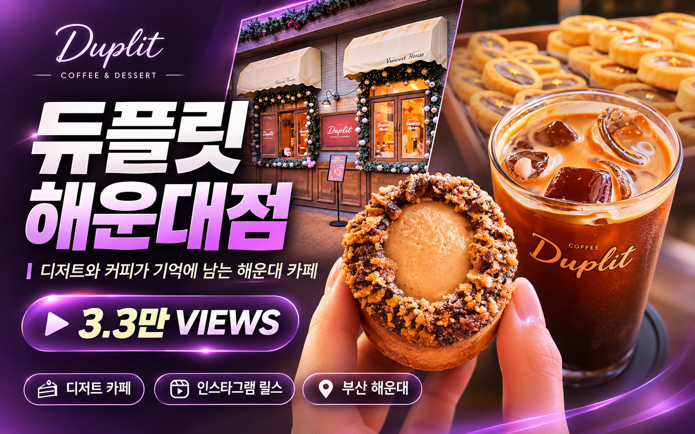
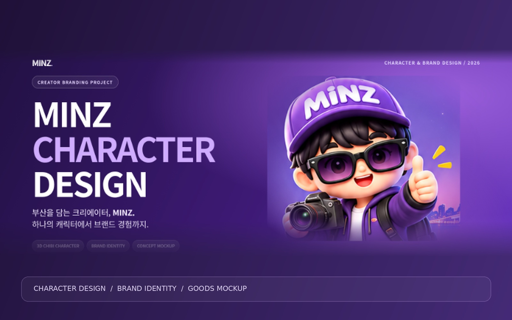

SELECTED PROJECT
SELECTED PROJECT
01 · TOURISM / BRAND FILM
영도 봉산마을 관광 콘텐츠
지원사업 선정작. 마을의 이야기를 기획하고 현장·드론 촬영, 롱폼·숏폼 편집까지 수행했습니다.
지원사업 선정 · 제작지원 200만 원 전체 영상 보기 ↗CREATIVE PORTFOLIO · 2026
기획부터 마지막 컷까지,
이야기를 영상으로 완성합니다.
영상 기획 · 촬영 · 드론 · 편집 · AI · 콘텐츠 마케팅
SELECTED WORKS
실제 프로젝트, 창의적인 연출, 콘텐츠 성과를 한눈에.
SELECTED PROJECT
지원사업 선정작. 마을의 이야기를 기획하고 현장·드론 촬영, 롱폼·숏폼 편집까지 수행했습니다.
지원사업 선정 · 제작지원 200만 원 전체 영상 보기 ↗ SOLO PRODUCTION
SOLO PRODUCTION
교육 현장과 실습 공간의 매력을 담은 브랜드 영상. 기획·촬영·드론 촬영·편집을 직접 수행했습니다.
기획부터 편집까지 1인 제작 YouTube 영상 보기 ↗ 54K VIEWS
54K VIEWS
현장 촬영과 후킹 중심의 편집을 결합해 방문 정보를 전달한 SNS 콘텐츠.
약 5.4만 조회수 인스타그램 채널 보기 ↗
부산 서구의 해안과 도시 풍경을 기록한 지역 홍보영상. 실제 현장 촬영과 영상 편집을 담당했습니다.
YouTube 영상 보기 ↗
건물 전경, 실내 공간과 입지 특성을 소개하는 홍보영상. 기획·현장 촬영·드론·편집 진행.
YouTube 영상 보기 ↗커피·디저트·매장을 음악과 컷 전환에 맞춰 담은 숏폼 광고. 현장 촬영과 리듬 편집의 역량을 보여줍니다.
영상 크게 보기 ↗
매장과 디저트를 소재로 후킹과 정보 전달을 결합한 실제 릴스 프로젝트.
약 3.3만 조회수 인스타그램 릴스 보기 ↗생성형 AI로 슈퍼카의 속도감, 네온 시티와 시네마틱 무드를 구현한 광고 콘셉트 영상.
영상 크게 보기 ↗실제 카페 공간과 로봇 액션을 결합한 스토리형 AI 광고. 실사와 생성형 영상 연출을 연결했습니다.
영상 크게 보기 ↗
CHARACTER DESIGN3D 캐릭터 모델시트, 표정·포즈 시스템, 패키지와 굿즈 목업까지 확장한 크리에이터 브랜딩 프로젝트.
전체 디자인 보기 ↗ APP UI/UX
APP UI/UX
맛집·전시·여행·팝업을 탐색하는 라이프스타일 큐레이션 앱. 서비스 기획부터 IA·와이어프레임· UI 디자인까지 진행했습니다.
Figma 프로토타입 보기 ↗ YOUTUBE SHORTS
YOUTUBE SHORTS
체험형 콘텐츠를 짧은 호흡과 타이밍으로 편집한 유튜브 쇼츠 영상.
YouTube Shorts 보기 ↗영상·AI·브랜딩 프로젝트를 하나의 브랜드 경험으로 구성한 반응형 포트폴리오 사이트.
GitHub 코드 보기 ↗CAREER & ACHIEVEMENTS
실무 경험과 결과로 이야기하는 콘텐츠 제작 역량
부산광역시 · 부산정보산업진흥원
스토리 기획부터 현장·드론 촬영, 롱폼·숏폼 편집까지 직접 수행한 관광 콘텐츠 프로젝트.
프로젝트 살펴보기 ↗* 조회수는 확인 시점 기준으로 이후 변동될 수 있습니다.
SNS 운영, 홍보 콘텐츠 기획, 촬영 및 영상 편집 등 디지털 마케팅 실무
콘텐츠 기획·촬영·편집·썸네일 제작· 업로드 전 과정
커뮤니케이션, 요구 분석, 정보 전달 및 문제 해결 경험
드론 운용 및 수색 활동
맛집·여행·라이프스타일 콘텐츠 제작
지역 콘텐츠 제작 및 홍보 활동
드론 촬영·운용 자격 보유
ABOUT ME
기획·촬영·편집과 디지털 마케팅을 연결하는 크리에이터
STORY-DRIVEN CONTENT
일상에서 이야기를 발견하고 영상으로 만드는 크리에이터 MINZ입니다.
10년 이상의 블로그 운영 경험을 바탕으로, 지금은 현장 촬영과 드론, 영상 편집, AI 기술 및 콘텐츠 마케팅을 결합하고 있습니다.
지역의 공간을 기록하는 영상부터 교육기관·브랜드 홍보영상, 인스타그램 릴스까지 기획과 결과를 연결합니다.
기획은 진지하게, 과정은 즐겁게,
결과물은 책임감 있게.
LET'S CONNECT
당신의 이야기를 영상으로 만들어 보겠습니다.
CREATE STORIES. INSPIRE PEOPLE.
브랜드 홍보영상 · 드론 촬영 · AI 콘텐츠 · SNS 마케팅